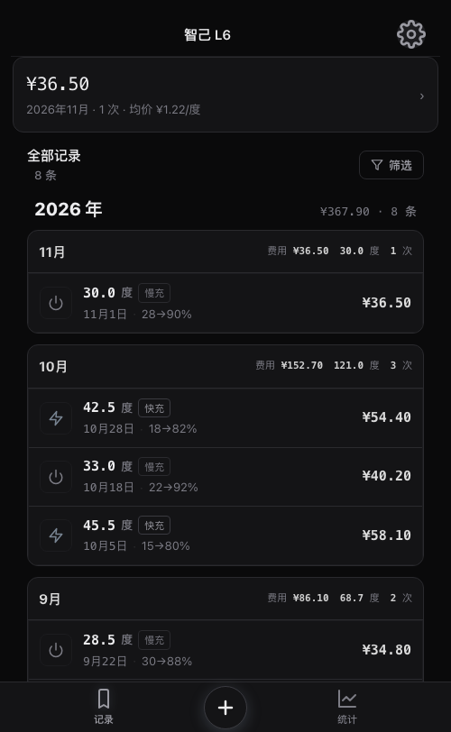
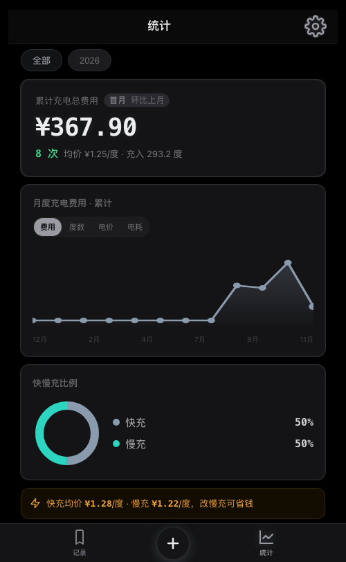
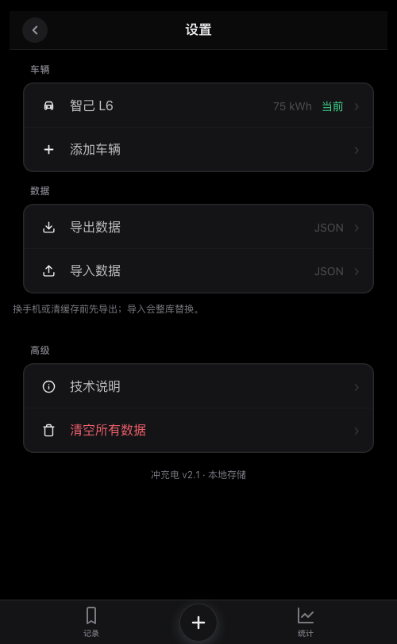

01改了什么
三个阶段：先把数据修对，再把信息结构从「报表优先」改成「记账优先」，最后整体重写视觉。收尾时又发现两处静默失效——点了没反应，但截图看不出来——已一并修掉。现在这版可以用，但还没有在真机上验证过。
P0 · 数据可信
| 改动 | 之前 | 现在 |
|---|---|---|
| 深放判定 修正 | socBefore < 20 直接计数，未填 SOC（值为 0）被当成「电量 0% 才充电」；分母还是全部记录，即使判断修好了，比例也会被未填记录稀释 |
仅统计 socBefore > 0 的记录，分母同步改为「有 SOC 的记录条数」；过充侧同样处理 |
| 首次安装的演示数据 删除 | 空库启动时自动写入 28 条「智己 L6」记录，没有里程、没有 SOC。新用户首屏看到的电耗、容量、习惯分全是假数 | 删除整个 seedDefaultData。空库直接显示「还没有车辆 · 去添加车辆」 |
| 每公里单价 修正 | 只要样本数 > 0 就出数，1 组里程也能算出单价，而同屏的「平均电耗」要求 ≥3 组 —— 同一张卡里两个口径 |
改为与电耗一致（≥3 组有效样本），不足时两处都显示 — |
| 导入 JSON 重做 | 选中文件立刻整库替换，无确认、无备份。选错文件即丢全部记录 | 解析校验 → 确认弹窗（写明将替换几辆车、几条记录）→ 自动把当前库存为快照 → 再替换。设置页新增「恢复导入前的数据」 |
| 云同步 删除 | GitHub Gist 全量推拉 + 令牌输入框；首次开启时两端会静默互相覆盖 | 整块移除：Sync 模块、令牌 UI、Store.save 里的同步钩子、启动拉取。备份改为手动导出 JSON |
| 清空数据 修正 | 清空后刷新会重新写入演示数据，等于永远清不干净 | 真正清空。演示数据已删除，不会再生 |
| 导出 / 清空按钮 修 bug | 内联 onclick 写的是 Store.exportJSON()，但 Store 从未挂到 window —— 点击必抛 ReferenceError，按钮是死的 |
改走 App.exportData() / App.clearAllData()。这两个功能此前实际不可用 |
P1 · 结构与交互
| 改动 | 之前 | 现在 |
|---|---|---|
| 底部导航 重排 | 首页 / 记录 / ＋ / 分析 / 我的，五个入口；设置藏在一级 Tab 里 | 记录 / ＋ / 统计 三个入口，设置移到右上角齿轮 |
| 首屏 重排 | 大号总费用卡 + 4 宫格累计 KPI + 趋势图 + 最近 3 条。记一笔只靠底栏一个加号 | 一行本月汇总（金额 · 次数 · 均价，可点进统计）+ 完整记录列表。累计 KPI 宫格已删 |
| 统计页 合并 | 统计 / 电池健康 / 充电建议 三个子页；含一个 100 分制「健康指数」，无样本时兜底成 60 + 0.4×习惯，也能显示「100 分 · 优秀」 |
一页三段：费用、电耗、电池，各自可点开明细。健康指数已删除，只保留容量保持率 / 习惯分 / 深放率；无样本一律 — 并提示还差几次 |
| 设置页 重排 | 固定昵称头像 + 车辆卡 + GitHub 令牌 + Gist 开关 + 迁移说明，技术项与日常操作混在一起 | 三段：车辆 / 数据 / 高级。令牌与 Gist 随云同步一起消失 |
| 记一笔表单 精简 | 5 个字段平铺 + 三字段互算，SOC 和里程占用主视区，实际很少填 | 主区只留类型 / 度数 / 金额 / 日期；SOC、里程、备注收进「补充信息」折叠；新增「上次：¥1.20/度」快填条 |
| 死代码 清理 | 约 1400 行无调用代码：Canvas 图表模块、五套废弃渲染器、车辆选择器、统计详情弹窗 | 全部删除。JS 从 3000 行降到 1790 行 |
顺带修掉的缺陷
| 问题 | 触发条件 | 处理 |
|---|---|---|
| 首页白屏 | 改导航后 currentTab 仍是 'home'，而 renderTab 已无 home 分支 |
默认页签改为 records |
| 套用电价后金额不联动 | 点「上次 ¥1.20/度」→ 再改度数，金额不跟着变，保存后单价与金额对不上 | 加 data-priceMode 标记：套用模式下金额 = 度数 × 单价；手动改金额则退出该模式 |
| 价差提示逐字竖排 | .price-diff-hint 是 flex 容器，内部 <b> 被当成独立 flex item，文字被拆成一列 |
文字包一层 <span> |
| 记录副标题被截断 | SOC 20%→85% · … 单行溢出，后半段里程被省略号吞掉 |
压缩为 20→85%，去掉 SOC 前缀 |
| 趋势头换行 | 窄屏下「费用 / 度数 / 电价 / 电耗」四个切换按钮被挤成多行 | 头部改纵向排列，按钮不换行 |
三个动作的结果
这三个动作改变的是行为，用的时候感受最直接：
以前清空后会重新出现 28 条演示记录。现在清空后刷新，看到的是「还没有车辆」，从零开始。
选中文件先弹确认（写明替换多少数据），确认后旧库自动存档，设置页会多出「恢复导入前的数据」。但存档只保留最近一次，连续导入两次，第一次的存档会被覆盖。
手机和电脑之间不再自动同步。换设备只能靠「导出 JSON → 传到新设备 → 导入」。如果你其实需要多设备，这条要在 P3 之前重新讨论，方案会比 Gist 更简单（对象存储 + 一个口令）。
02现在怎么用
应用仍是纯前端单页，无后端、无构建、无账号。打开即用，数据只在这台设备的浏览器里。
打开方式
| 场景 | 做法 |
|---|---|
| 电脑上预览 | cd app && python3 -m http.server 8000，浏览器打开 http://localhost:8000 |
| 手机上用 | 打开 https://pers1e20.github.io/chongchongdian/ → 浏览器菜单「添加到主屏幕」，之后从桌面图标进入，全屏无地址栏；断网也能打开 |
| 改完代码看效果 | 本地改完刷新即可。手机上看线上版：git push 后约 1 分钟 Pages 自动重建，直接下拉刷新即可看到新版（SW 已改 network-first，不用再手动改 CACHE_NAME） |
四个界面
| 界面 | 入口 | 内容 |
|---|---|---|
| 记录 | 底栏左 · 默认页 | 车辆名 + 右上角设置；本月汇总条（金额 / 次数 / 均价）；按时间倒序的记录列表，每条显示日期、快慢充、度数、金额，有值时补一行 SOC 与里程 |
| 记一笔 | 底栏中央 ＋ | 全屏表单，保存后停留本页可连续补录 |
| 统计 | 底栏右 | 费用（年度切换 + 月度趋势）、电耗（百公里电耗 / 每公里 / 样本数）、电池（容量保持率 / 习惯分 / 深放率），每段可点开明细 |
| 设置 | 记录页右上角齿轮 | 车辆（切换 / 编辑 / 添加）、数据（导出 / 导入 / 恢复快照）、高级（技术说明 / 清空） |
记一笔的实际操作
最短路径是 3 次输入 + 1 次保存：
- 点底栏 ＋，默认「快充」、日期为今天
- 填度数（如 45.5）
- 填金额（如 54.40）—— 单价自动算出，不用管
- 点保存，表单清空并停留本页，可继续记下一笔
两个加速手段：
| 手段 | 效果 |
|---|---|
| 「上次 ¥x/度」快填 | 点一下套用上次单价，之后只填度数，金额自动算；手动改金额则自动退出该模式 |
| 「补充信息」折叠 | 展开可填 SOC 前 / 后、里程、备注。填里程才能算电耗，填 SOC 才能算电池容量 |
统计口径（决定数字可不可信）
| 指标 | 怎么算 | 什么时候没有数 |
|---|---|---|
| 均价 | Σ费用 ÷ Σ度数，只看当前车辆 | 当月没有记录 |
| 百公里电耗 | 相邻两条记录的里程差构成一个区间，按 3σ 稳健均值处理，区间计入后一条记录所在月份 | 有效区间 < 3 组 —— 显示「再记 N 次可估算」 |
| 每公里单价 | 均价 × 百公里电耗 ÷ 100 | 与电耗同条件，不足 3 组即 — |
| 电池容量 | 单次估算 = 充电度数 ÷ SOC 跨度；跨度 ≥30% 才取样，结果限制在标称容量的 0.7~1.08 倍；取最近 5 次的中位数 | 没有满足跨度的记录 |
| 容量保持率 | 实测容量 ÷ 标称容量 | 车辆未填标称容量，或没有容量样本 |
| 习惯分 | 100 − 快充惩罚 − 深放惩罚 − 过充惩罚：快充超 30% 的部分每 1% 扣 0.8；深放率 ×60；过充率 ×40 | 没有任何记录时为 0，不参与展示 |
电耗要求连续两条记录都有里程，且至少凑够 3 个区间。只记度数和金额是算不出来的。如果只关心花多少钱，不填里程完全够用。
数据在哪里
| 项目 | 说明 |
|---|---|
| 主库 | 浏览器 localStorage，键名 ev_charging_data_v1，内含 vehicles / charges / settings 三部分 |
| 导入快照 | 独立键 ev_backup_preimport_v1，只在执行导入时写入，仅保留最近一次 |
| 导出 | 设置 → 数据 → 导出数据，得到一个 JSON，就是整库快照，可改名存档 |
| 导入 | 整库替换。确认前不写入，确认后原库进快照 |
| 清空 | 不可恢复。清空前建议先导出 |
先「导出数据」。localStorage 随浏览器数据一起被清掉，没有云端副本，删了就没了。
当前限制（已知，未处理）
| 限制 | 影响 |
|---|---|
| Service Worker 缓存优先 | sw.js 是 cache-first。每次发版必须手动改 CACHE_NAME（现为 ev-charging-v43），否则手机上一直是旧版。这是「更新麻烦」的真正原因 |
| 无多设备同步 | 手机与电脑的数据互不相通，只能手动搬 JSON |
| 视觉仍是旧体系 | 玻璃拟态、渐变、101 处阴影、172 处圆角都还在，P2 才处理 |
| 图标底块是彩色的 | 设置页仍有六种彩色方块托底（蓝 / 青 / 绿 / 橙 / 金 / 红），P2 统一 |
| 无数据校验 | 度数、金额填 0 或负数仍能保存，只在保存时做基本非空判断 |
03下次做什么
以下任务全部未执行，只做留档。等你用几天、把实际问题攒出来再启动 —— 顺序和内容都可能根据反馈调整。
| 阶段 | 内容 | 前置 | 状态 |
|---|---|---|---|
| P0 数据可信 | 7 项修正 | 无 | 已完成 |
| P1 结构 | 6 项重排与清理 | P0 | 已完成 |
| P2 视觉 | 4 项，设计令牌 + 组件样式重写 | 无 | 已完成 |
| P3 部署 | 3 项，缓存策略与托管迁移 | 你的部署决定 | 待启动 |
P2 · 视觉重写（已完成）
四项已全部落地。核心变化：先删掉 1430 行死样式，再在干净底子上重写，而不是在旧层上打补丁。
| 项 | 做法 | 结果 |
|---|---|---|
| 设计令牌 | 石墨体系：底 #0A0A0B、面 #141416、线 #2A2A2E、主文 #EDEDEF | 一次替换 168 处颜色字面量；gradient() 与 backdrop-filter 归零 |
| 组件样式 | 卡片统一「面 + 1px 线 + 12px 圆角」，列表行 60 高，图表 1.5px 细线 | 阴影只剩 focus 的 inset；圆角全部走令牌；字号收敛为 5 级 |
| 图标体系 | 设置页六种彩色底块统一为单色 | 界面内不再有装饰性彩色，颜色只表达状态（正常 / 警示 / 危险） |
| 文案与空态 | 空态改可执行提示，数值统一等宽 | 金额、度数、日期全部等宽并右对齐；无效值统一「—」 |



顺带修掉的三个缺陷
| 问题 | 原因与处理 |
|---|---|
| 空库白屏 | 多层渐变背景被替换成纯色后，background: 色,色,色 是非法值，整条声明被浏览器丢弃。改为单色 |
| 表单页可能整屏空白 | 滑入动画在低端机或省电模式下可能停在起始帧，元素卡在屏幕外。补上静态终态并去掉该动画 |
| 空态按钮像禁用 | 旧样式用强调色填充，改色后成了灰底灰字。改为透明底 + 描边 |
验收结果
| 项 | 目标 | 实测 |
|---|---|---|
backdrop-filter | 0 | 0 |
| 渐变 | 0 | 0 |
| 字面量阴影 | 0 | 0（仅保留 focus 内描边） |
| 固定圆角值 | 0 | 仅剩 50%（圆形头像/圆点）与 0 |
| 字号种类 | 5 | 5（11 / 13 / 15 / 20 / 32） |
| JS 颜色字面量 | 0 | 0（图表取色全部移入 CSS） |
| 交互回归 | 20 项通过 | 20 / 20 |
阻断修复（本轮，计划外）
核验时发现一个比部署更紧急的问题，它让新设备完全无法使用。
| 问题 | 原因 | 处理 |
|---|---|---|
| 「添加车辆」「编辑车辆」必崩 修 bug | openVehicleModal() 第一行就执行 document.getElementById('vehicleForm').reset()，但 #vehicleForm、#vehicleModal、#vf_* 在页面里一个都不存在。基线版本 f6b4ae0 同样为 0，属交接包自带缺陷 |
补齐为独立覆盖页 #vehicleFormPage，与「记一笔」同一套交互；字段 id 保持不变，保存逻辑零改动；返回栈按当前打开的覆盖页优先关闭 |
| 失效的点击入口 加检测 | 这类问题点下去没反应，截图、控制台都看不出来。此前已出现过一次（Store 未挂到 window，导出与清空点了抛 ReferenceError） |
新增 docs/click-audit.py：扫描所有 onclick 的目标方法是否真实存在、所有 getElementById 的 id 是否存在。用修复前的版本反向验证过，能准确报出那 10 个缺失 id |
窄屏防御式加固（本轮）
没有真机，就不做像素验收，改做失效模式改造：把「溢出 / 重叠」这类不可控失效，统一改成「省略号」这类可控失效。
| 项 | 改法 | 为什么 |
|---|---|---|
| 全局横向兜底 | overflow-x: clip（不支持时回落 hidden） | clip 不创建滚动容器，不会破坏顶栏的 sticky |
| 顶栏车名 | 单行 + 省略号 | 车名由用户输入，中文会逐字换行把导航撑成两行 |
| 保存提示条 | max-width: calc(100vw - 32px)，允许换行 | 「已套用 ¥1.20/度，输入度数后自动算金额」约 381px，超出 375 视口 |
| 表单标签 | 宽度自适应、允许换行 | 「充电前 SOC」约 79px，被固定 76px 加省略号截成「充电前 SO…」 |
| 记录行 | 内容区 min-width: 0，金额上限 46% | 金额不收缩时会压住日期与 SOC |
| 指标条 / 月份头 | 收缩 + 省略号 | 三格数字在长单位下会串位或被硬裁 |
| 弹层网格 | repeat(2, minmax(0,1fr)) | 1fr 的最小值是 min-content，长串会把列顶宽 |
| 点击区 | 伪元素扩到 44px，不改变视觉 | 顶栏齿轮、返回键、开关实际只有 26–32px 高 |
| 视口高度 | 100dvh + 旧值回退 | iOS 地址栏收放会让弹层高度跳动 |
| 2px 溢出 | 顶栏 margin: 0 -2px 归零 | 实测顶栏比容器宽 4px，是唯一的真实横向溢出源 |
验证靠新写的 docs/mobile-check.mjs：通过 DevTools 协议把视口真正设成 375 / 414 / 768（无头 Chrome 的 --window-size 最小只能到 500，直接截图会漏掉窄屏问题），逐页扫描横向溢出、越界、关键点击目标，以及滚动到底后是否被底栏永久遮挡。三档 × 六界面 + 空库，异常 0 处。
P3 · 缓存与配置（已完成）
| 项 | 之前 | 现在 |
|---|---|---|
| 缓存策略 已完成 | 纯 cache-first，每次发版必须手动递增 CACHE_NAME；忘了改就永远看到旧版，旧 HTML 配新 JS 还会白屏 |
导航与 html/js/css/json 走 network-first（2 秒超时回落缓存），图片保持 cache-first。缓存名固定为 ev-charging-v2，此后不需要再改 |
| 启动画面配色 已完成 | background_color / theme_color 仍是旧底色 #050508，启动时会闪一下 |
manifest、页面 theme-color、入口页三处统一为 #0A0A0B |
| 入口页双跳转 已完成 | 同时有 meta http-equiv="refresh" 与 location.replace，等于导航两次 |
只保留 location.replace（带 search / hash 透传） |
| 托管方案 已定 | 仓库只在本地，没有远端；曾评估迁 Cloudflare Pages（配置已备好） | Cloudflare 账号被暂停（pages.dev 子域名封锁），无法创建项目；决定继续用 GitHub Pages，远端已建并推送 |
实测：改一处业务代码 → 刷新 → 立即看到新内容；断网刷新仍能打开并读到本地数据。这两条都在真实浏览器会话里验过，不是推断。
交给真机验收的 9 条
下面这些我没有能力验证，不假装验过。拿到手机后按顺序点一遍，每项只需答「正常 / 有问题」。
线上地址已就绪，直接打开 https://pers1e20.github.io/chongchongdian/ 逐条过即可；第 9 条（断网）要先把应用完整打开一次，让 Service Worker 装上，再开飞行模式。
- 底部导航三个元素是否完整，有没有被 iPhone 底部横条压住
- 记录页里金额与日期是否在同一行，有没有互相压住
- 统计页三格指标是否各占一格，有没有串位或出现省略号
- 记一笔表单里「充电前 SOC」标签是否完整（不是「充电前 SO…」）
- 保存后的提示条是否被屏幕两侧切掉
- 设置页返回箭头是否在左上角
- 添加车辆、记一笔、编辑、删除四条路径是否都能走通
- 户外强光下，次要文字（日期、单位、备注）是否还看得清
- 断网后能否打开，并看到已有记录
为什么这 9 条只能真机验：375px 下的字体回退（Android 没有 SF Mono，数字会宽 5–10%）、安全区（桌面 env(safe-area-inset-*) 恒为 0）、触摸手感、iOS 地址栏收放，这四类东西在无头浏览器里根本没有对应物。
04注意事项
存储键、数据结构、导出格式三样都没动。手机上原有的记录、旧版本导出的 JSON，导入这版仍然能用。计算口径只修正了「未填 SOC 被当深放」和「样本不足也出单价」两处明显错误，其余未变。
项目目录里有 .ssh_keys/gh_deploy，是明文私钥。已写入 .gitignore 不会进版本库，但文件仍在磁盘上。如果不是必需的，建议删除或移出项目目录。
已 git init 并提交三次：基线快照 → P0 → P1。改错可以回滚、可以逐行对比。但没有远端仓库，换机器或误删目录就没了。P3-2 之前需要先补一个远端。
想退到改动前：git checkout f6b4ae0 -- app/。想只退结构改动、保留数据修正：git revert 6025fb7。